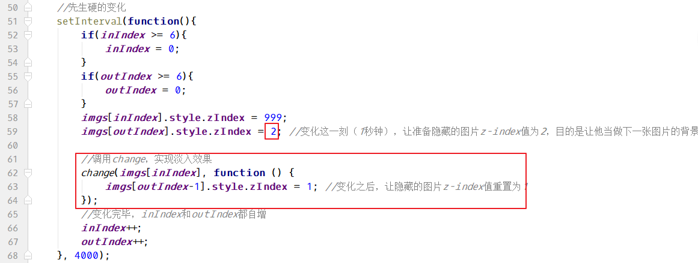

六、案例–可编辑的表格
文件名： 可编辑的表格.html
页面效果：

6.1、设置html和css样式
html代码：
1 | <table> |
css样式：
1 | *{ |
6.2、JS做隔行换色
1 | <script> |
6.3、找到包含姓名的td
因为 id列通常为不可编辑，所以只需要姓名列的对象。
6.4、循环绑定单击事件
1 | //遍历tds，给每个姓名td绑定单击事件 |
到这一步，点击td之后，会生成一个input，并放到td中。
6.5、处理input和td的样式，处理点击逻辑问题
前提需要之前获取css样式的兼容方法getStyle。需要复制过来。
1 | //遍历tds，给每个姓名td绑定单击事件 |
6.6、设置input的失去焦点事件和键盘事件
1 | td.style.width = td_width; |
七、案例
7.1、案例—隔行换色
12隔行换色.html
1 | <table border="1" cellpadding="2" cellspacing="0" rules="all" align="center" width="500"> |
效果：

7.2、案例—全选，反选，取消
11全选反选取消.html:
1 | <table border="1" cellpadding="2" cellspacing="0" rules="all" align="center" width="500"> |
js代码：
1 | //函数，设置input标签选择或取消 |
7.3、案例—仿淘宝评分
09仿淘宝评分.html 代码：
注意：需要复制图片。
1 | <img src="images/rank_3.gif"/> <!-- 左半星星 --> |
十、案例–图片淡入淡出
10.1、编写html+css
1 | <style> |
10.2、实现切换效果，生硬的变化
1 | var imgs = document.getElementsByTagName('img'); //获取了所有图片 |
10.3、设置改变透明度的函数
1 | //定义函数，设置元素的透明度 |
10.4、完成change函数，让图片慢慢的变化
1 | //定义一个函数，设置元素透明度的慢慢变化效果 |
函数设置完毕，要配合z-index，一起使用：
